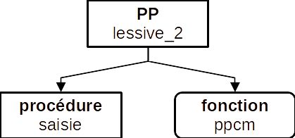
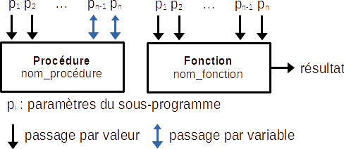
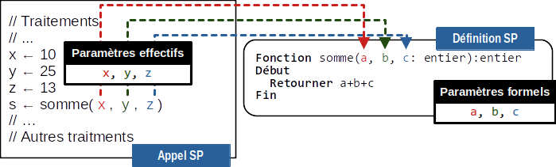
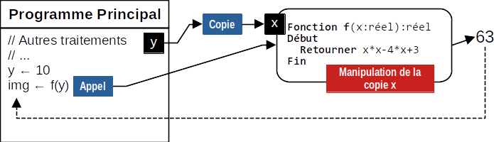
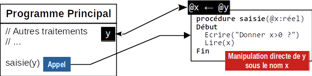
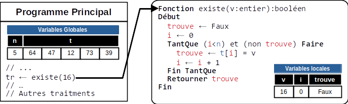
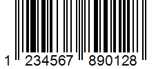

Najla, Douja et Zohra ont fait leurs lessives aujourd’hui. Or, Najla fait sa lessive
tous les 3 jours, Douja tous les 4 jours et Zohra
tous les 6 jours.
Lessive
Questions
Combien passera-t-il de temps avant que les trois femmes ne refassent leurs lessives le même jour ?
En supposant que :
Najla fait la lessive tous les lf1 jours. Avec lf1 > 0
Douja fait la lessive tous les lf2 jours. Avec lf2 > 0
Zohra fait la lessive tous les lf3 jours. Avec lf3 > 0
Déterminer quand les trois femmes referons leurs lessives le même jour ?
Ecrire l'algorithme d'un programme pour résoudre ce problème.
Solution
On pourra déterminer graphiquement le temps requis pour voir les trois femmes faire leurs lessives le même
jour. Et ce en utilisant l'échelle temporelle suivante :
Jours de lessive
On en déduit qu'il faudra attendre 12 jours.
On remarque que le temps requis pour voir les trois femmes faire leurs lessives dans une même journée peut
être calculé en utilisant la formule suivante :
PPCM = Plus Petit Commun Multiple, c'est le plus petit nombre qui est multiple des trois nombres
L'algorithme de cette situation peut être écrit de deux façons :
1ère façon : méthode classique
Algorithme Lessive
Début
// Saisie du jour de lessive de chaque femme
Répéter
Ecrire("Lessive femme 1 ? ") ; Lire(lf1)
Jusqu'à (lf1 > 0)
Répéter
Ecrire("Lessive femme 2 ? ") ; Lire(lf2)
Jusqu'à (lf2 > 0)
Répéter
Ecrire("Lessive femme 3 ? ") ; Lire(lf3)
Jusqu'à (lf3 > 0)
// Après combien de jours la 2ème et la 3ème femme font leurs lessives
p1 ← lf2
TantQue p1 mod lf3 ≠ 0 Faire
p1 ← p1 + lf2
Fin TantQue
// Après combien de jours les 3 femmes font leurs lessives
p2 ← lf1
TantQue p2 mod p1 ≠ 0 Faire
p2 ← p2 + lf1
Fin TantQue
ltf ← p2
// Affichage du résultat
Ecrire("Toutes les femmes feront leurs lessives après", ltf, "jours")
Fin
Algorithme Lessive2
Début
// Saisie du jour de lessive de chaque femme
saisie("Lessive femme 1 ? ", lf1)
saisie("Lessive femme 2 ? ", lf2)
saisie("Lessive femme 3 ? ", lf3)
// Après combien de jours les 3 femmes font leurs lessives
ltf ← ppcm(lf1, ppcm(lf2, lf3))
// Affichage du résultat
Ecrire("Toutes les femmes feront leurs lessives après", ltf, "jours")
Fin
TDOG
Objet
Type/Nature
lf1, lf2, lf3, ltf
entier
Procédure saisie
procédure saisie(msg: chaîne, @nj: entier)
Début
Répéter
Ecrire(msg)
Lire(nj)
Jusqu'à (nj > 0)
Fin
TDOL
Objet
Type/Nature
-
-
Fonction ppcm
fonction ppcm(a, b: entier):entier
Début
p ← a
TantQue (p mod b ≠ 0) Faire
p ← p + a
Fin TantQue
retourner p
Fin
En mathématiques, une fraction est irréductible s'il n'existe pas de fraction égale ayant
des termes plus petits. Autrement dit, une fraction irréductible ne peut pas être
simplifiée.
Théorème
Soient a un entier et b un entier naturel non nul. Alors est irréductible si et
seulement si
a et b sont premiers entre eux.
Exemple
La fraction n'est pas
irréductible
car 12 et 20 sont des multiples de 4 : (simplification par 4).
On peut aussi écrire .
La fraction est
irréductible car 1 est le seul entier positif qui divise à la fois 3 et 5.
Méthode de simplification
Pour réduire directement une fraction, il suffit de diviser le numérateur et le dénominateur par leur
plus grand commun diviseur. D'après le lemme de Gauss, cette forme réduite est unique.
Exemple
Pour réduire la fraction , on
calcule puis on
simplifie par 6
: .
Problème
On souhaite écrire l'algorithme d'un programme modulaire qui calcule la somme de deux
fractions :
Somme de deux fractions avec : p1, p2, ps ∈ 𝕫 et q1, q2, qs ∈ 𝕫*
Solution
Solution non modulaire
Algorithme Somme_Fraction
Début
// Saisie de p1 et q1
Ecrire("Fraction : p1 / q1")
Ecrire("Numérateur ? ") ; Lire(p1)
Répéter
Ecrire("Dénominateur ? ") ; Lire(q1)
Jusqu'à q1 ≠ 0
// Saisie de p2 et q2
Ecrire("Fraction : p2 / q2")
Ecrire("Numérateur ? ") ; Lire(p2)
Répéter
Ecrire("Dénominateur ? ") ; Lire(q2)
Jusqu'à q2 ≠ 0
// Calcul de la somme des deux fractions
ps ← p1 * q2 + p2 * q1
qs ← q1 * q2
// Calcul du PGCD(ps, qs)
a ← ps
b ← qs
TantQue b ≠ 0 Faire
r ← a mod b
a ← b
b ← r
Fin TantQue
// Simplification
ps ← ps div a
qs ← qs div a
// Affichage
Ecrire(p1, "/", q1, "+", p2, "/", q2, "=", ps, "/", qs)
Fin
Deux nombres entiers naturels distincts sont dits « amicaux » (ou « amiables ») si la
somme des diviseurs stricts de l'un est égale à l'autre et réciproquement.
Les diviseurs de 10 sont 1, 2, 5, 10. Les diviseurs stricts de 10 sont 1, 2, 5.
Travail demandé
Chercher la liste des diviseurs stricts de 220 et de 284.
Vérifier que 220 et 284 sont deux nombres amicaux.
Ecrire l'algorithme d'un programme qui vérifie si deux nombres données sont amicaux.
Algorithme amicaux
Début
// Saisie de deux nombres strictement positifs
Répéter
Ecrire("Donner n ? ") ; Lire(n)
Jusqu'à (n > 0)
Répéter
Ecrire("Donner m ? ") ; Lire(m)
Jusqu'à (m > 0)
// calcul de la somme diviseurs de n
sn ← 0
Pour i de 1 à n div 2 Faire
Si n mod i = 0 Alors
sn ← sn + i
Fin Si
Fin Pour
// calcul de la somme diviseurs de m
sm ← 0
Pour i de 1 à m div 2 Faire
Si m mod i = 0 Alors
sm ← sm + i
Fin Si
Fin Pour
// Affichage du résultat
Si (n = sm) et (m = sn) Alors
Ecrire(n, "et", m, "sont amicaux.")
Sinon
Ecrire(n, "et", m, "ne sont pas amicaux.")
Fin Si
Fin
Transformer la solution précédente en une solution modulaire.
Solution
Programme Principal
Algorithme amicaux
Début
// Saisie de deux nombres strictement positifs
saisie("Donner n ? ", n)
saisie("Donner m ? ", m)
// calcul de la somme diviseurs de n
sn ← som_div(n)
// calcul de la somme diviseurs de m
sm ← som_div(m)
// Affichage du résultat
Si (n = sm) et (m = sn) Alors
Ecrire(n, "et", m, "sont amicaux.")
Sinon
Ecrire(n, "et", m, "ne sont pas amicaux.")
Fin Si
Fin
TDOG
Objet
Type/Nature
n, m, i, sn, sm
entier
Procédure saisie
Procédure saisie(msg: chaîne, @n: entier)
Début
Répéter
Ecrire("Donner n ? ") ; Lire(n)
Jusqu'à (n > 0)
Fin
TDOL
Objet
Type/Nature
-
-
Fonction som_div
Fonction som_div(n: entier):entier
Début
sn ← 0
Pour i de 1 à n div 2 Faire
Si n mod i = 0 Alors
sn ← sn + i
Fin Si
Fin Pour
retourner sn
Fin
L'analyse modulaire, appelée également décomposition modulaire, consiste à
diviser un problème en sous problèmes de difficultés moindres.
En algorithmique, les sous problèmes correspondent à des sous-programmes.
Sous-programme
Un sous-programme est une section de code nommée qui peut être
appelée en écrivant son nom dans une instruction du programme.
L'écriture de sous-programmes rend le code plus lisible et réutilisable, car le
code est subdivisé en des sections plus petites.

Décomposition modulaire du problème de lessive des trois femmes
En algorithmique on distingue deux catégories de sous-progrmmes : les
procédures et les fonctions.
Une procédure exécute simplement un ensemble d'instructions, tandis qu'une
fonction renvoie une valeur une fois son exécution est terminée.

Différence entre une procédure et une fonction
La plupart des langages de programmation sont livrés avec un ensemble de sous-programmes intégrés (fonctions
prédéfinies). Ils permettent, aussi, au programmeur d'écrire leurs propres sous-programmes personnalisés.
Fonction
Définition
Une fonction est un sous-programme qui retourne à son appelant un seul
résultaten fonction de ses paramètres.
Une fonction peut avoir zéro ou plusieurs paramètres. Ces paramètres sont
souvent transmis par valeur.
Appel
Comme une fonction renvoie toujours une valeur, son appel peut se faire de différentes
manières :
Dans une affectation :
// pgcd(a, b) renvoie le PGCD des deux valeurs
dc ← pgcd(a, b)
Dans une structure conditionnelle :
// Afficher si un nombre est premier
// premier(n) retourne vrai si n est un nombre premier
Si premier(n) Alors
Ecrire(n, "est premier")
Sinon
Ecrire(n, "n'est pas premier")
Fin Si
Dans une structure itérative :
// f(x) est une fonction qui admet un extrémum
// en x0 ∈ [0, +∞[
// Recherche de l'extrémum de f(x)
x0 ← 0
TantQue (f(x0+pas) > f(x0)) Faire
x0 ← x0 + pas
Fin TantQue
// Saisir une chaine alphabétique
// est_alphabetique(ch) : retrourne Vrai
// Si ch[i] ∈ ["A", "Z"] ⋃ ["a", "z"]
Répéter
Ecrire("Une chaine alphabétique ? ")
Lire(ch)
Jusqu'à est_alphabetique(ch)
Comme paramètre d'un autre sous-programme :
// somme_carre(a, b) renvoie a² + b²
Ecrire(somme_carre(a, b))
// calculer PGCD de a, b et c
dc ← pgcd(a, pgcd(b, c))
Vocabulaire et Syntaxe
Une fonction s'écrit comme suit en algorithmique :
Fonction NomFonction(p1: type1, p2: type2, ...,
pn: typen):typerésultat
//
// Traitements
//
Retourner résultat
Fin
Procédure
Définition
Une procédure est un sous-programme qui ne retourne pas, directement, de résultats
à son appelant.
Une procédure peut avoir zéro ou plusieurs paramètres. Ces paramètres
peuvent être, selon le besoin, transmis par valeur ou
transmis par variable.
En algorithmique, le mode de passage par variableest utilisé pour renvoyer,
indirectement, un ou plusieurs résultats à l'appelant. Lorsqu'une procédure renvoie des résultats à
travers ses paramètres, on dit qu'elle possède un effet de bord.
Appel
Comme une procédure ne renvoie aucune valeur, son appel se fait toujours de la même
façon :
// Saisir une valeur dans n
saisir(n)
// Remplir le tableau t par n valeurs distinctes
remplir_tab(t, n)
// Echanger le contenu de deux variables
permuter(a, b)
Une procédure utilise les paramètres passés par valeur pour réaliser ses traitements. Elle
peut, aussi, modifier la valeur des paramètres transmis par variable, directement, chez l'appelant.
Vocabulaire & Syntaxe
Une procédure s'écrit comme suit en algorithmique :
Un sous-programme défini réellement un ensemble de traitements effectués sur
des données. Ces données doivent être passées au sous-programme
dans ses paramètres.
Types de paramètres
On distingue deux types de paramètres :
Les paramètres formels : utilisés lors de la définition d'un sous-programme.
Les paramètres effectifs : utilisés lors de l'utilisation (l'appel) d'un
sous-programme.
Dans la figure ci-dessous, les paramètres a, b et c qui
figurent dans la définition du sous-programmesomme
sont appelés des paramètres formels
Les paramètres x, y et z utilisés dans le programme
principal qui appelle le sous-programmesomme
sont dits effectifs ou réels.

Les types de paramètres
Modes de passage des paramètres
Il existent deux modes de passage des paramètres : par variable ou par valeur.
Passage par valeur
Lors d'un passage par valeur, la valeur de l'expression passée en paramètre est copiée dans une
variable locale. C'est cette variable qui est utilisée pour faire les traitements dans le sous-programme
appelé.
Dans la figure suivante, la valeur de y est copiée dans le paramètre x de
la fonction lors de l'appel de cette dernière.

Passage par valeur
Passage par variable
Dans la figure suivante, l'adresse de la variable y est transmise à la procédure
saisie sous le nom de x. Tout changement de la valeur de x
dans la procédure à pour effet le changement de la valeur de y.
x et y sont deux noms différents de la même variable. La variable
y dans le sous-programme est appelée x.

Passage par variable
Portée des variables
Toute variable a une durée de vie bornée au bloc où elle est
déclarée. Ce bloc définit la portée de la variable.
Les variables globales sont déclarées dans le programme principal. Elles sont
utilisables dans tout le programme.
Les variables locales sont déclarées dans un sous-programme. Elles ont une portée
limitée et elles ne sont utilisables qu'à l'intérieur de celui-ci.
La fonction existe dans l'exemple suivant utilise les variables globalest et n qui sont déclarées dans le programme principal.
trouve et i sont des variables locales car elles sont visibles
uniquement à l'intérieur du sous-programme.

Variables globales et Variables locales
L'exemple précédent est à éviter car il
contre-dit l'esprit de la modularité. Il est conseillé vivement d'éviter les variables
globales.
// A éviter
// Dépend des variables du PP
Fonction existe(v:entier):booléen
// Meilleure écriture
// Indépendant du PP
Fonction existe(v:entier;t:tab;n:entier):booléen
Applications
Nombre heureux
Un nombre heureux est un entier strictement positif, qui lorsqu'on additionne les carrés de chacun de ses
chiffres, puis on additionne les carrés des chiffres de la somme obtenue et ainsi de suite, on obtient un
entier à un seul chiffre égal à 9.
Ecrire l'algorithme d'un programme qui permet de chercher et afficher tous les nombres heureux de
p (2 ≤ p ≤ 5) chiffres.
Exemples
Nombre de chiffres ? 3
122 est heureux.
125 est heureux.
...
954 est heureux.
28 nombres heureux dans l'intervalle [100, 999].
Nombre de chiffres ? 4
1022 est heureux.
1025 est heureux.
...
9985 est heureux.
274 nombres heureux dans l'intervalle [1000, 9999].
Nombres frères
Deux entiers n1 et n2 sont dits frères ssi chaque chiffre de n1
apparaît au moins une fois dans n2 et inversement (avec n1 > 0 et n2 > 0).
Ecrire l'algorithme d'un programme qui saisit deux entiers n1 et n2 puis vérifie
s'ils sont frères ou non.
Exemples
Donner n1 > 0 ? 1234
Donner n2 > 0 ? 434212
1234 et 434212 sont frères
Donner n1 > 0 ? 154
Donner n2 > 0 ? 341
154 et 341 ne sont pas frères
Nombres super premiers
Un nombre est dit super premier ssi il est premier et si en supprimant des chiffres à partir de sa droite, le
nombre restant est toujours premier.
Ecrire l'algorithme d'un programme qui cherche tous les nombres super premiers dans un intervalle [a, b]
donné (100 < a < b < 100000).
Exemples
a > 100 ? 101
101 < b < 100000 ? 1000
233 est super premier.
239 est super premier.
...
739 est super premier.
797 est super premier.
14 nombres super premiers dans [101, 1000]
a > 100 ? 1000
1000 < b < 100000 ? 10000
2333 est super premier.
2339 est super premier.
...
7333 est super premier.
7393 est super premier.
16 nombres super premiers dans [1000, 10000]
Billet
Sur les billets d'avion d'une companie aérienne figure un code de 11 lettres alphanumériques (chiffres et
lettres majuscules).
Pour vérifier l'authenticité d'un billet, on remplace la lettre du code par son rang alphabétique pour
obtenir un nombre de 12 ou de 13 chiffres.
Si le reste de la division par 9 de la somme des chiffres de ce nombre est égale à 8, ce billet est
authentique, sinon c'est un faux billet.
Ecrire l'algorithme d'un programme qui permet de vérifier l'authenticité d'un billet à partir de son code.
Exemples
Numéro de billet ? AR798NKV789
Somme de contrôle : 6
Billet non authentique.
Numéro de billet ? AR798NKV989
Somme de contrôle : 8
Billet authentique.
EAN13
Le code EAN13 (European Article Numbering à 13 chiffres) est un code à barres utilisé sur l'ensemble des
produits de grande consommation. Ce code est composé de 13 chiffres.

Exemples de codes à barres
Un code EAN13 est formé par :
Un identifiant du produit q formé par les 12 premiers chiffres à gauche.
La clé de contrôle cc formé par le dernier chiffre à droite.
Pour vérifier qu'un nombre de 13 chiffres est un code EAN13 valide on applique le principe suivant :
On calcule la somme s des chiffres de q en commençant par le chiffre le plus à
gauche et en multipliant les chiffres de rang pair par 3. Le rang du premier chiffre le plus à gauche est 1,
celui du deuxième chiffre le plus à gauche est 2, etc.
On calcule le reste r de la division euclidienne de s par 10.
On calcule p qui est égal à (10-r)
Si p est égal à cc alors le code est valide.
Ecrire l'algorithme d'un programme qui permet de saisir un nombre n de 13 chiffres et vérifie
s'il est un code EAN13 ou non.
Exemples
Vérification du code à barre : 1234567890128
q = "123456789012" et cc = "8"
q
1
2
3
4
5
6
7
8
9
0
1
2
8 = 10-2
s
1
2 × 3
3
4 × 3
5
6 × 3
7
8 × 3
9
0 × 3
1
2 × 3
=92
Vérification du code à barre : 9780201379624
q = "978020137962" et cc = "4"
q
9
7
8
0
2
0
1
3
7
9
6
2
4 = 10-6
s
9
7 × 3
8
0 × 3
2
0 × 3
1
3 × 3
7
9 × 3
6
2 × 3
=96
Code EAN13 ? 9780201379624
Code EAN13 valide.
Code EAN13 ? 9780201379625
Code EAN13 invalide.
Game of Thrones shop
Les statistiques montrent qu’en 2022 environ 2,46 milliards de personnes ont joué à des jeux vidéo sur
une console, un ordinateur ou un mobile. Vu le nombre important des "gamers" on trouve des centaines
de boutiques en ligne qui vendent des répliques des articles rencontrés dans les jeux vidéos.
Un "gamer" adepte du jeu Games of Thrones se rend sur l’une de ces boutiques, voir figure 1.
Le "gamer" dispose d’un budget limité. Et il veut faire un programme qui :
Saisit le nombre d’articles n disponibles dans la boutique. (2 ≤ n ≤ 50)
Remplit trois tableaux :
items : contient les noms des articles qui sont des chaînes d’au moins 3 caractères. Les articles
doivent être distincts.
categories : contient les catégories des articles, les catégories acceptées sont :
Catégorie
"SW"
"AR"
"SH"
"WE"
Signification
Sword (épée)
Armor (Armure)
Shield (Bouclier)
Weapon (Arme)
prices : contient les prix des articles (des entiers ≥ 0)
Saisit son budget (20 ≤ budget ≤ 300)
Saisit une catégories parmi les catégories mentionnées dans le tableau précédent.
Affiche la liste des articles de cette catégorie, dont le prix est inférieur ou égal à son budget.
Exemples : Pour n = 8 et les articles suivants :
items
The Sword of Jon Snow
Sword of Arya Stark
Widow’s Wail Sword
Dragon Leather Bracers Set
The Helm of Loras Tyrell
Stark Infantry Shield
Lannister Shield
The Red Viper’s Spear
categories
SW
SW
SW
AR
AR
SH
SH
WE
prices
239
179
649
38
249
257
275
299
Exemple 1
Your budget? 202
Select a category? SW
Affordable items:
Sword of Arya Stark - Price: 179
Exemple 2
Your budget? 182
Select a category? SH
Affordable items:
No items
Exemple 3
Your budget? 54
Select a category? AR
Affordable items:
Dragon Leather Bracers Set - Price: 38
Écrire l'algorithme de ce programme. Ne pas oublier le TDNT et le TDO.
Solution non modulaire
On donne la solution non modulaire de ce problème et on demande de le décomposer en modules et d'écrire
l'algorithme de chaque module.
Algorithme Boutique
Début
Répéter
Ecrire("Number of items [2, 50] ? ") ; Lire(n)
Jusqu'à (2 ≤ n ≤ 50)
Pour i de 0 à n-1 Faire
Ecrire("Item n°", i)
Répéter
Ecrire("Name ? ") ; Lire(items[i])
existe ← Faux
j ← 0
TantQue (non existe) et (j < i) Faire
existe ← items[j] = items[i]
j ← j + 1
Fin TantQue
Jusqu'à (Long(items[i]) ≥ 3) et (non existe)
Répéter
Ecrire("Category ? ") ; Lire(categories[i])
Jusqu'à categories[i] ∈ ["SW", "AR", "SH", "WE"]
Répéter
Ecrire("Price ? ") ; Lire(prices[i])
Jusqu'à prices[i] ≥ 0
Fin Pour
Répéter
Ecrire("Your budget ? ") ; Lire(budget)
Jusqu'à 20 ≤ budget ≤ 300
Répéter
Ecrire("Select a category ? ") ; Lire(catsel)
Jusqu'à catsel ∈ ["SW", "AR", "SH", "WE"]
ic ← 0
Ecrire("Affordable items:")
Pour i de 0 à n-1 Faire
Si (categories[i] = catsel) et (budget ≥ prices[i]) Alors
Ecrire("Item:", items[i], " - Price:", prices[i])
ic ← ic + 1
Fin Si
Fin Pour
Si ic = 0 Alors
Ecrire("N items.")
Fin Si
Fin


 est irréductible si et
seulement si
a et b sont premiers entre eux.
est irréductible si et
seulement si
a et b sont premiers entre eux.
 n'est pas
irréductible
car 12 et 20 sont des multiples de 4 :
n'est pas
irréductible
car 12 et 20 sont des multiples de 4 :  (simplification par 4).
On peut aussi écrire
(simplification par 4).
On peut aussi écrire  .
.
 est
irréductible car 1 est le seul entier positif qui divise à la fois 3 et 5.
est
irréductible car 1 est le seul entier positif qui divise à la fois 3 et 5. , on
calcule
, on
calcule  puis on
simplifie par 6
:
puis on
simplifie par 6
:  .
.